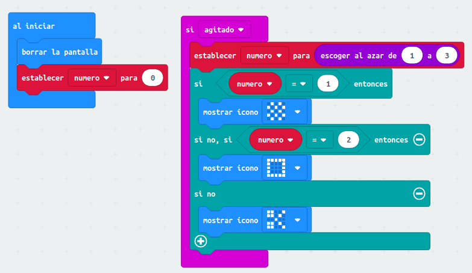
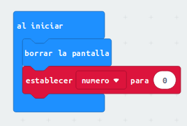
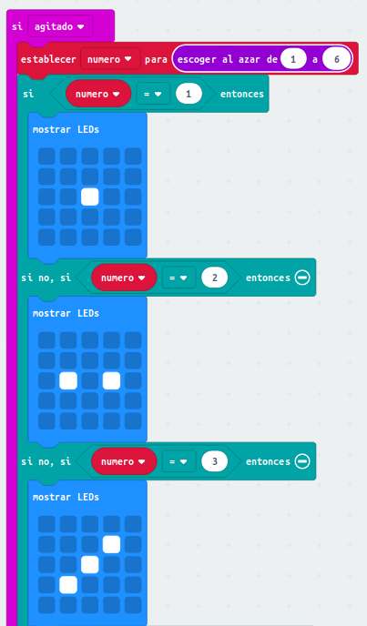

Realiza los retos siguientes, simúlalos y una vez comprobado que funcionan, súbelos a la placa. Grábate y Sube el vídeo a tu Drive jugando al parchís en grupo con tu dado microbitiano ó a piedra papel tijeras, y luego entrégalo en la tarea. Puedes usar este tablero virtual.
Entrega los proyectos creados,
|
Reto: Piedra-Papel-Tijera.
Se trata de agitar microbit para que muestre el símbolo de piedra, papel o tijera al azar para
jugar contra un humano.
Contenidos trabajados:
- Entorno de programación Makecode
- Envío de contenidos a microbit
- Condicionales
- Creación y uso de variable
- Trabajo inicial con eventos
- Entradas con acelerómetro (eventos)
|
 |
|
Reto : Dado electrónico
Se trata de un dado electrónico, cada vez que agitamos microbit nos muestra los números al
azar como en un dado.
Contenidos trabajados:
- Entorno de programación Makecode
- Envío de contenidos a microbit
- Condicionales
- Creación y uso de variable
- Trabajo inicial con eventos
- Entradas con acelerómetro (eventos)
|
 |